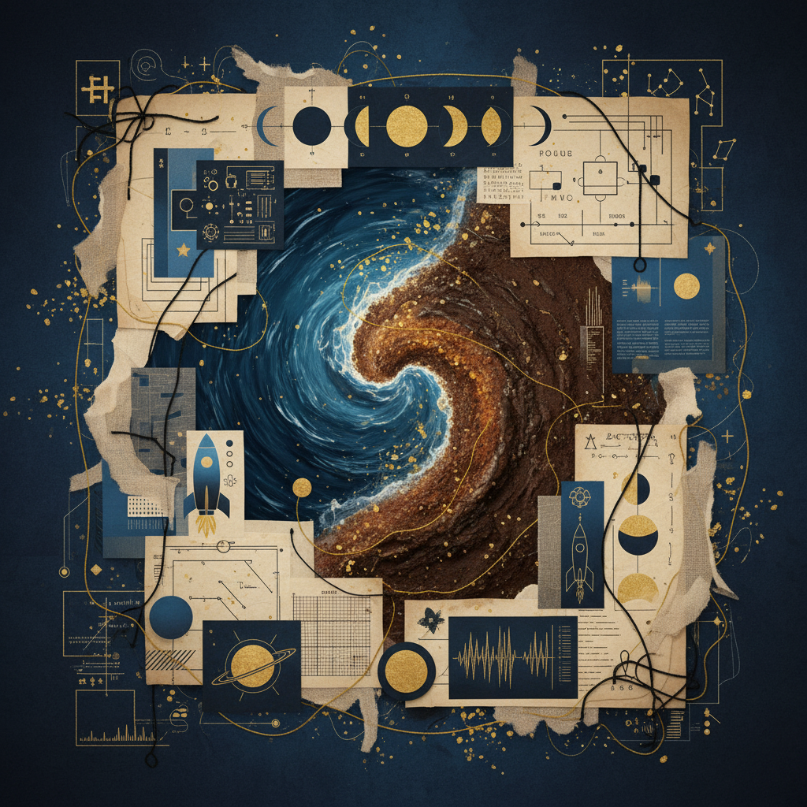

Workbook 02:
Context & Framing
Navigating the profound shift from the shadowy waters of Scorpio to the tactile foundations of Taurus.
Lunar Awakening
The Scorpio Full Moon demands a descent into the internal archives—the emotional basement where truths are often kept under lock and key. It is the archetype of the Diver, plunging into the depths of the psyche to retrieve the gold of self-awareness.
"To reach the root, one must first navigate the deep current."

Taurus Grounding
As we transition to the Taurus New Moon, the focus shifts from the abstract to the tangible. This is the act of planting those Scorpio insights into physical soil. We move from the intensity of the reproductive organs—the seat of creation—upwards to the throat, finding the voice to articulate our newfound grounded reality.
edit_note Dream Log: Subconscious Echoes
analytics Initial Attunements
Rate the somatic resonance in the corresponding centers:
"The journey from the reproductive center to the voice is the journey of bringing the unborn into existence through sound."